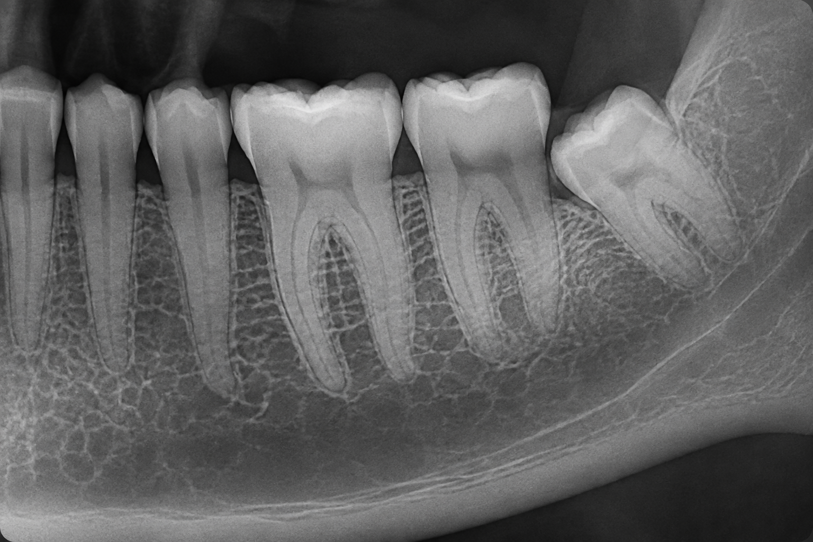

Vista previa
Radiografia seleccionada

Panoramica inicial
Mario Araya · 29/08/2026
Adjunto asociado a evaluacion para implante molar. La aplicacion guardara el archivo en la carpeta local del paciente y registrara la ruta en SQLite.
media/pacientes/000002/radiografias/2026-08-29-panoramica.png